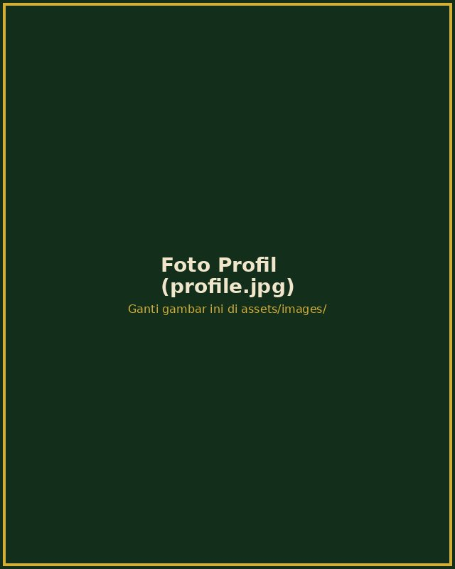
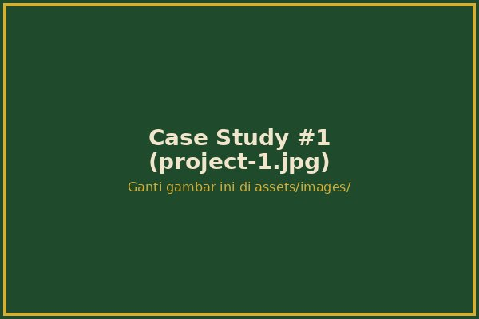
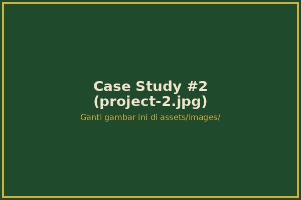
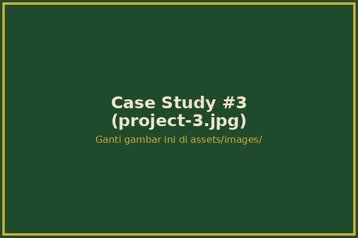

Digital Marketer & Brand Strategist
Saya membantu brand menemukan jalur terbaik di tengah rimbanya algoritma, kanal, dan persaingan digital — dari SEO hingga pertumbuhan media sosial.

Tentang Saya
Setiap bisnis yang masuk ke dunia digital seperti melangkah ke dalam hutan lebat — penuh peluang, tetapi juga penuh jalan buntu. Sebagai Digital Marketer, peran saya adalah menjadi pemandu: memetakan jalur, membersihkan semak algoritma, dan menuntun brand Anda menuju cahaya — yaitu pertumbuhan yang terukur.
Selama lebih dari 5 tahun, saya telah membantu puluhan bisnis — dari startup kecil hingga brand nasional — menemukan suara mereka, menaikkan peringkat pencarian, dan membangun komunitas yang loyal di media sosial.
50+
Proyek
3.2x
Rata-rata ROI
98%
Klien Puas
Layanan
Setiap layanan adalah jalur berbeda menuju tujuan yang sama: brand Anda ditemukan, dipercaya, dan dipilih.
Memetakan jalur tersembunyi agar mesin pencari menemukan brand Anda lebih cepat — riset kata kunci, optimasi on-page, dan strategi backlink organik.
Pelajari Lebih Lanjut →Membuka jalur cepat melalui kanopi hutan — kampanye Google & Meta Ads yang ditargetkan untuk hasil instan dengan biaya efisien.
Pelajari Lebih Lanjut →Menanam benih cerita yang tumbuh menjadi kepercayaan — perencanaan konten, copywriting, dan kalender editorial yang konsisten.
Pelajari Lebih Lanjut →Menghubungkan setiap "pohon" menjadi satu ekosistem yang ramai — pengelolaan komunitas, kolaborasi, dan strategi viral organik.
Pelajari Lebih Lanjut →Portfolio
Beberapa cerita keberhasilan dari klien yang berhasil saya pandu menuju pertumbuhan nyata. Arahkan kursor pada kartu untuk melihat lebih dekat.

SEO & Content
Meningkatkan trafik organik dengan strategi konten berbasis cerita asal-usul biji kopi.
+185% Trafik Organik

SEM & Paid Ads
Kampanye iklan terarah yang menurunkan biaya akuisisi pelanggan secara signifikan.
-42% Cost per Acquisition

Social Media Growth
Membangun komunitas Instagram dari nol menjadi ekosistem yang sangat aktif.
120K Followers dalam 8 Bulan
Kontak
Klik peti di bawah untuk membuka formulir kontak. Ceritakan tantangan bisnis Anda, dan mari kita temukan jalan keluar dari rimba digital bersama.
* Klik bagian atas peti untuk membuka / menutup formulir.